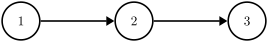
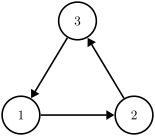
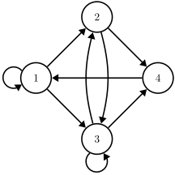

Graphs & Trees: Intro
A directed graph (or di-graph / digraph) is an ordered pair $G = (V, E)$ in which:
- The set $V$ is a non-empty set of vertices / nodes, and
- The set $E$ is a set of directed edges (also called arcs or arrows) of the form $(v_1, v_2)$, where $v_1, v_2 \in V$ (each edge connects two vertices.)
Note a digraph's edge is a one-way street: having $(v_1, v_2) \in E$ is the same as having only $v_1 \rightarrow v_2$ (but it doesn't tell anything about $v_2 \rightarrow v_1$.) In other words, the direction of the arrow matters in a directed graph.

A digraph shaped as a chain. Miriam Briskman, CC BY-NC 4.0.

A digraph shaped as a cycle. Miriam Briskman, CC BY-NC 4.0.

A digraph with multiple edges and self-loops. Miriam Briskman, CC BY-NC 4.0.
 These notes by Miriam Briskman are licensed under CC BY-NC 4.0 and based on sources.
These notes by Miriam Briskman are licensed under CC BY-NC 4.0 and based on sources.